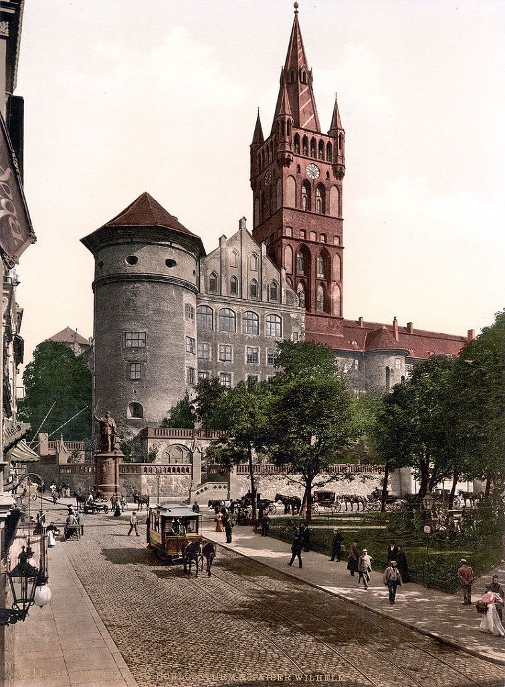
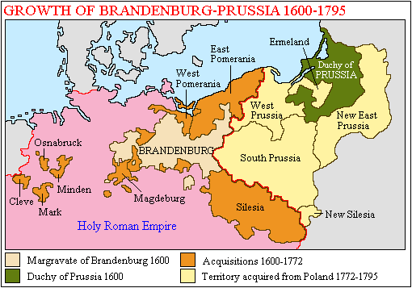
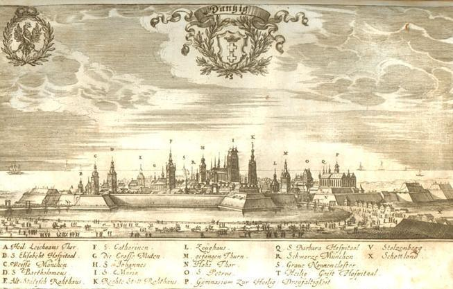
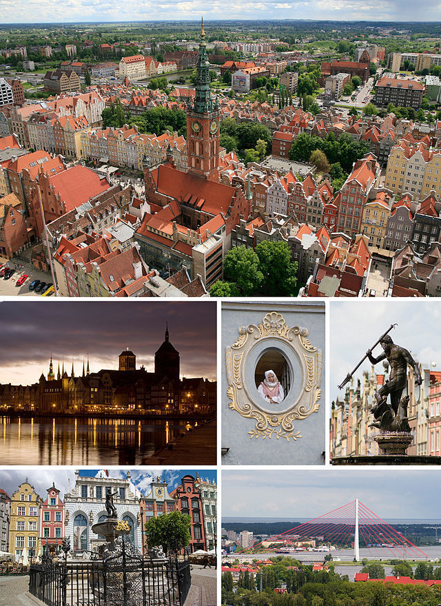
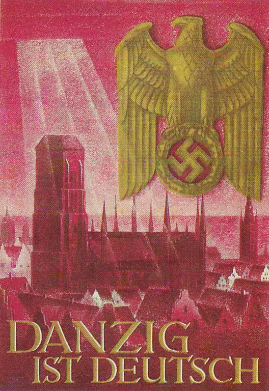
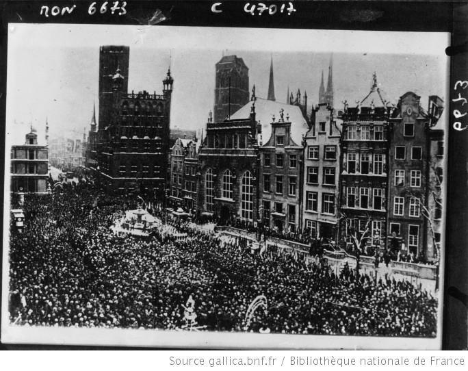
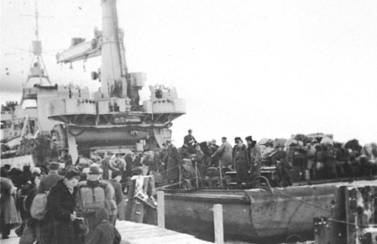
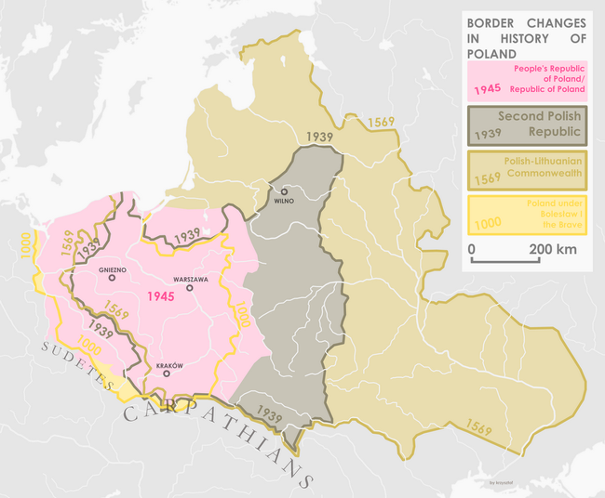

잃어버린 프로이센의 영토와 클로제
게시: 2018-04-04T19:30:34+09:00
1807년 나폴레옹이 러시아 군을 격파하고 마침내 굴복을 받아낸 프리틀란트는 동부 프로이센의 주도인 쾨니히스베르크(Königsberg) 근처에 있는 지역입니다. 쾨니히스베르크는 독일어로 '왕의 산'이라는 뜻이고, 프로이센 공국의 수도였습니다. 지금 이 도시는 러시아 발트 함대의 모항인 칼리닌그라드(Kaliningrad)라는 이름의 러시아 도시가 되어 있습니다. 왜 그렇게 유서 깊은 독일 도시가 러시아 영토가 되었을까요 ? 예전에 독일 도시였다면 그곳에 살던 독일인들은 어떻게 되었을까요 ? 또, 지금 독일이 다시 매우 강대국이 되어 있는데, 독일 내에서 이렇게 잃어버린 옛영토를 되찾자는 움직임은 없을까요 ?

(쾨니히스베르크의 모습입니다. 아마 19세기 말 정도의 모습인가봐요 ?)
전에도 다룬 바 있습니다만, 독일 통일의 주역이었던 프로이센 왕국은 원래 유럽 북동부, 즉 현재의 폴란드 북동쪽과 러시아 땅에 자리잡았던 종교적 군사 단체인 튜톤 기사단에 기원을 두고 있습니다. 이런 먼 동쪽 끝 변방의 공국이 혼인 관계에 의해 독일 중부의 브란덴부르크(Brandenburg) 공국과 합쳐지면서 프로이센 왕국의 기초가 다져집니다. 사실 따지고 보면 프로이센이 브란덴부르크를 먹었다기 보다는 브란덴부르크가 프로이센을 먹은 것이 맞습니다. 그러나 신성로마제국에 대한 신하 관계 때문에, 왕국이 될 때의 이름은 프로이센 왕국이 되었지요.

이런 역사적 배경 때문에 프로이센은 유럽 중부와 동부에 따로 분리된 두 덩어리의 영토를 가지게 되었습니다. 점차 프로이센 왕국의 국력이 강성해지면서, 이 두 영토 사이의 땅을 차지하여 두 영토를 합치려는 노력이 계속되었지요. 이런 노력 중에 희생된 것이 바로 폴란드였습니다. 이렇게 프로이센 땅이 된 옛 폴란드 지역에는 여전히 많은 폴란드 사람들이 살고 있었으나, 주요 도시 지역에는 이주해온 독일인들의 인구가 점점 늘어났습니다.
나폴레옹이 아일라우(Eylau) 전투 이후 제대로 된 공세를 위해 포위 공격하여 마침내 점령했던 단치히(Danzig)는 처음부터 프로이센 공국에 속해 있던, 주민 대부분이 독일인인 독일계 도시였습니다. 하지만 분열된 독일 공국들간의 알력들 속에서, 중세 자유 도시들이 흔히 그러했듯이 어느 왕에게 완전히 종속되는 것이 싫었던 단치히 시는 16세기 때만 해도 나름 강력했던 폴란드 왕국의 야기엘로(Jagiello) 왕조에게 손을 뻗쳤습니다. 폴란드 왕의 주권을 인정하는 조건으로, 단치히 시는 자치권을 허락받은 것이지요. 사실 프로이센 공국도 초기에는 폴란드 왕의 종주권 하에 있을 정도로 폴란드 왕국의 세력이 강성했거든요.

(17세기 초반 단치히 항구의 모습입니다.)
나중에 프로이센 왕국이 강성해지면서 단치히 시는 자치권을 빼앗기고 프로이센 왕국의 영토로 편입됩니다. 그러나 1807년 포위 공격 끝에 단치히를 점령한 나폴레옹은, 이 중요한 발트해의 항구 도시를 프로이센에게 돌려주기 싫어서, 단치히에게 다시 자유 도시라는 지위를 부여했습니다. 이렇게 탄생한 단치히 자유시는 그 댓가로 나폴레옹에게 많은 세금을 바쳐야 했고, 결국 나폴레옹의 몰락과 함께 다시 프로이센 왕국으로 편입되어야 했습니다.
진짜 큰 문제는 독일이 제1차 세계대전에서 패배한 뒤에 벌어졌습니다. 1919년 베르이사이유 조약에 의해 폴란드 공화국이 재건되면서, 근 100년간 독일 제국의 땅이었던 영토가 다시 폴란드 땅이 된 것입니다. 이 지역들은 100년 전에는 폴란드 땅이었으므로 당연히 많은 폴란드 사람들이 살고 있었으나, 100년 간이나 독일 땅으로 있다보니 자연스럽게 독일인들도 적지 않게 이주하여 살고 있었습니다. 물론 이 독일인들은 졸지에 자신들이 경멸하던 폴란드 국민으로 살아가야 한다는 것이 불만이었으나, 가진 재산과 생업 기반을 버리고 갈 수 없었으므로 결국 불만을 품은 채 일단 그렇게 살 수 밖에 없었습니다.
폴란드 식으로 그단스크(Gdansk) 자유도시가 된 단치히에서는 상황이 더욱 심각했습니다. 당시 통계로는 전체 주민의 90% 정도가 독일계였던 이 도시가, 폴란드가 주권을 가지는 자유 도시라는 어정쩡한 정체성을 가지게 된 것입니다. 단치히 주민들은 독일 시민권을 포기하고 그단스크 시민으로 살던가, 아니면 가진 재산을 모두 놔두고 몸만 빠져 나가 독일에 가서 독일 시민으로 살던가를 택하라고 강요를 받았습니다. 하지만 당시 독일은 패망하여 피폐해진 상태였으므로, 단치히의 독일계 주민들은 대부분 잔류를 택했습니다.

(단치히, 아니 그단스크의 오늘날의 모습입니다. 아주 멋진데요 !!)
이렇게 갈등의 요소가 많았던 그단스크 시 안에서는 민족 갈등이 꽤 심했습니다. 특히, 독일에서 나찌가 정권을 잡으면서는 노골적으로 폴란드계와 유태계를 차별하고 박해하는 일이 늘어났지요. 나찌 독일은 오스트리아를 합병하고 체코로부터 수데텐란트(Sudetenland)를 빼앗은 뒤, 이제는 그단스크, 아니 단치히를 내놓을 것을 폴란드에게 요구했습니다. 단치히는 원래 독일 영토이고 동부 프로이센과 중부 독일을 연결하는 전략적인 지역이라는 이유였지요. 결국 독일이 폴란드를 침공하면서 단치히는 독일 땅으로 편입되었고, 도시 주민들은 나찌 독일군을 열광적으로 환영했습니다.

(단치히는 독일이다 ! 라는 나찌의 포스터입니다.)

(아래 사진은 1933년에 독일로의 귀속을 주장하고 지지하는 단치히 독일계 주민들의 집회입니다.)
이런 전과가 있다보니, 1945년 독일의 패망이 눈 앞에 다가오고 소련군의 진격이 코 앞에 닥치자, 독일은 단치히로부터 대규모로 민간인들을 철수시키기 시작했습니다. 특히 진격하는 소련군이 독일 민간인들을 잔혹하게 다룬다는 소식이 들려오면서, 제1차 세계대전 이후 때와는 달리, 독일계 주민들은 목숨을 구하기 위해 무조건 서쪽으로 도망치기에 바빴지요. 그렇지만 항상 예외는 있기 마련입니다. 모든 사람들이 다 서쪽으로 탈출할 수는 없었지요. 1945년 6월, 종전 직후 기록을 보면 단치히 시내에는 약 12만명의 독일인이 남아 있었습니다. 이들은 민간인 신분이었으나 1949년까지 사실상 포로 상태로서 소련군의 감독 하에 가혹한 노예 노동을 해야 했는데, 그나마 1950년까지 대부분의 생존자들이 동독으로 추방되었습니다.

(이 사진은 1945년 전쟁 말기 쾨니히스베르크에서 독일 군함을 타고 필사적으로 탈출하는 독일 주민들의 모습입니다.)
제2차 세계대전 이후, 이제 소련의 위성 국가가 된 동독은 스탈린의 주문대로 동부 영토를 다 할양해야 했습니다. 이때 독일은 옛 프로이센 공국 지역을 완전히 상실합니다. 동독이야 그렇다치고, 서독은 이런 국경 변화를 인정했을까요 ? 물론 당시 서독 수상 아데나워는 인정하지 않았습니다. 이건 마치 북한이 함경도 전체를 뚝 떼어 중국에게 넘겨주는 것과 마찬가지였으니까요. 그러나 1970년 서독의 빌리 브란트(Willy Brandt) 총리는 폴란드와 바르샤바 조약을 맺고 당시의 동독-폴란드 국경을 인정하기로 했습니다. 사실 폴란드로서도 이익이라고 할 수는 없었던 것이, 종전 직후 스탈린 마음대로 폴란드 동부 지역을 소련 땅으로 떼어가고, 대신 독일 동부 지역을 폴란드 땅으로 떼어준 것이었거든요. 역사적으로 보면 폴란드 땅은 원래 전반적으로 현재보다 좀더 동쪽에 있었으나, 이런 과정을 겪으면서 20세기 들어 많이 서쪽으로 이동한 결과를 낳았습니다. 아무튼, 과거 동부 독일 지역은 이런 식으로 독일 역사에서 영원히 상실되었습니다.

(폴란드 영토가 전반적으로 서쪽으로 옆걸음질치는 모습이 보이십니까 ?)
영토야 그렇다치고, 그 땅에 살던 독일인들은 어떻게 되었을까요 ? 대부분은 단치히 시민들처럼 종전이 되기 전에 서쪽으로 도주하기도 했고, 일부 남은 사람들도 1950년 이전까지 독일로 추방된 경우가 많았습니다. 그러나 여전히 남아서 폴란드인으로 새로운 삶을 살게된 독일인들도 꽤 되었던 모양입니다. 이런 독일인들을 독일 정부는 여전히 자기 국민으로 인정했습니다. 이들이 만약 지금이라도 독일로 귀국하여 독일 시민권을 취득하기를 원할 경우 그것을 인정하는 법안을 만든 것입니다. 이런 권리를 Aussiedler(이주민)라고 부릅니다.
이렇게 귀환한 사람들 중 여러분들이 최근에 본 가장 유명한 사람이 바로 미로슬라프 클로제, 즉 독일 축구 국가 대표 선수이자 월드컵에서 가장 많은 누적골을 기록한 사나이입니다. 클로제는 옛 독일 영토인 실레지아(Silesia)의 도시 오폴레(Opole)에서 폴란드인으로 태어났는데, 그의 아버지가 과거 폴란드 땅에 남은 옛 독일인 후손이었던 것입니다. 그의 아버지 요제프 클로제(Josef Klose)도 축구 선수였는데, 그는 처음에는 폴란드 팀에서 뛰다가 나중에 프랑스 프로 축구팀 오세르(AJ Auxerre)에서 선수 생활을 했습니다. 이렇게 해외 생활을 하여 발전된 서구에 눈을 뜨게 된 아버지 클로제는 역시 공산주의 폴란드를 떠나는 것이 좋겠다고 판단하여 고국에 남아 있던 가족들까지 모두 독일로 불러들여 Aussiedler로서 독일 시민권을 신청했던 것이지요. 이때 클로제의 나이 8살이었고, 이때 클로제가 아는 독일어는 단 두 단어 뿐이었다고 합니다. (아마 Ja와 Nein 아니었을까 합니다.)
이렇게 독일 시민권을 취득한 옛 폴란드인들은 여전히 폴란드 국적도 유지할 수 있었습니다. 따라서 젊은 축구선수 클로제가 두각을 나타내자, 폴란드 국대팀에서 코치를 파견하여 '자네 폴란드 국가 대표로 뛰지 않겠는가'라는 제안을 했으나, 클로제는 '현재대로라면 독일 국대도 가능하겠다' 라며 거절했고, 결국 오늘날의 클로제로 대성할 수 있었습니다. 클로제는 '폴란드 대신 독일을 택한 것이 쉬운 일은 아니었다'라고 밝혔는데, 그도 그럴 것이 지금도 그는 집에서 와이프와는 물론 아이들과도 폴란드어로 이야기할 정도로 스스로를 폴란드인으로 여기고 있다고 합니다.
(포돌스키입니다. 지금은 은퇴했나 모르겠네요.)
이와 비슷한 처지의 선수로는 현재 아스널에서 뛰고 있는 포돌스키(Lukas Podolski)가 있습니다. 거의 비슷한 과정을 거쳐 독일인이 된 포돌스키는 한때 클로제와 함께 바이에른 뮌헨에서 선수 생활을 했는데, 이때 이 둘은 상대팀 선수들이 자기들 말을 알아듣지 못하도록 필드 위에서는 폴란드어로 대화를 했다고 합니다.
이런 생각이 들 수도 있습니다. 요즘 점점 강성해지는 통일 독일에서, 혹시라도 나중에 '상실한 옛 프로이센 영토를 되찾자'라는 움직임이 벌어지면 어쩌나 하는 우려지요. 위에서 언급했듯이, 1970년 브란트 총리가 바르샤바 조약을 맺고 옛 영토를 완전히 포기한다고 선언했을 때, 독일 내 보수파들은 민족에 대한 배신 운운하며 격하게 비판했습니다. 그러나 최근에 만난 어떤 독일 영감님 말씀을 들어보니, 현재로서는 그럴 염려, 즉 옛 영토를 되찾으려는 움직임이 생길 우려는 거의 없다고 합니다. 스탈린이 나름 철저하게 그럴 가능성에 대비하여, 옛 독일 영토에 있던 독일계 주민을 철저하게 추방했기 때문에, 과거 영토에 남아 있는 독일계 주민들이 거의 없기 때문이기도 하고, 우리 옆의 섬나라 인간들과는 달리, 독일인들은 제2차 세계대전으로부터 정말 많은 것을 배웠기 때문에, 독일의 영광은 영토의 크기가 아니라 이웃 국가들과 공존하는 리더쉽에서 나온다는 것을 잘 알고 있기 때문이라고 합니다. 그러나 모르지요. 우리나라처럼 작고 힘없는 나라에서도 세계 제2위의 강대국 중국으로부터 거의 천년 전에 잃어버린 만주 벌판을 되찾아야 한다고 떠벌이는 사람들이 있는데, 나중에 독일에 또 미치광이들이 나오지 말란 법은 없겠지요.